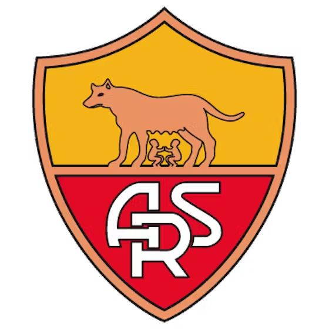
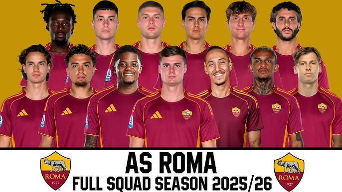

Historia
Fundada en 1927, la Roma es uno de los clubes más representativos de Italia. Ha sido protagonista en la Serie A y competiciones europeas.

Estadio
La Roma juega en el Estadio Olímpico de Roma, uno de los recintos más importantes del fútbol italiano.

Jugadores actuales
La Roma combina talento joven con jugadores experimentados, manteniéndose competitiva en la Serie A.
Títulos Ganados

Serie A
3

Coppa Italia
9

Supercopa de Italia
2

Conference League
1

Mejor jugador de su historia
Francesco Totti es el máximo ídolo en la historia de la Roma. Jugó toda su carrera en el club, convirtiéndose en símbolo eterno de la institución.

Logro Único
La Roma fue el primer campeón de la UEFA Conference League en 2022, marcando un nuevo capítulo europeo en su historia.